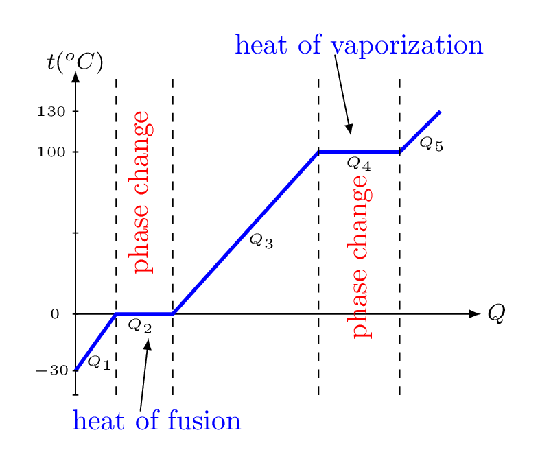
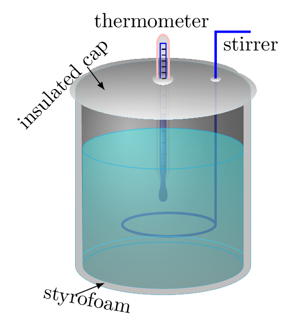
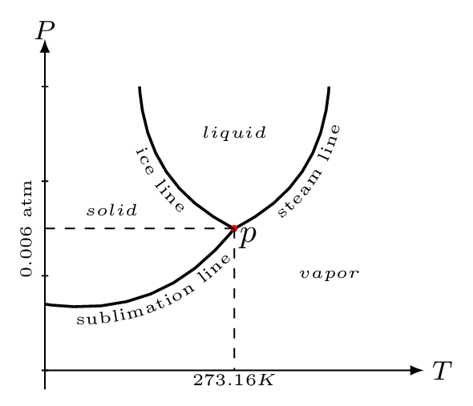
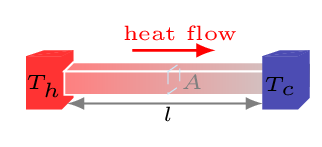
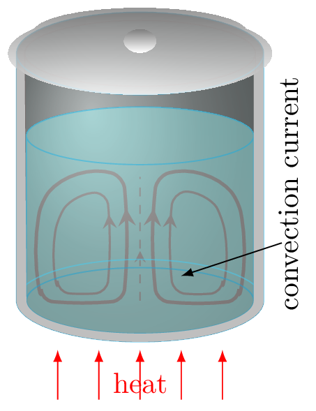
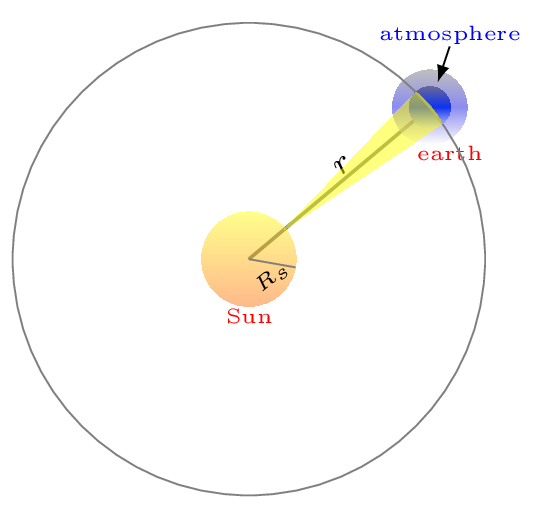

Section 10.3 Quantity of Heat
Heat is a transfer of energy. When an object gains or losses heat it either changes its temperature or its phase. A change in temperature is associated with changes in the average kinetic energy of the particles and a change in phase is associated with changes in the internal potential energy possessed by the object. In this section we will learn how to measure the quantity of heat gained or released by an object.
Subsection 10.3.1 Specific Heat Capacity
Heat absorbing capacity of a material is known as specific heat capacity. Suppose we have two marbles at room temperature \(T_{o}=25^{o}C\text{,}\) one has mass 1 kg and another has mass 2 kg. If we want to heat them to \(100^{o}C\text{,}\) then from our experience we know that 2 kg marble will take longer than 1 kg marble to reach at the same temperature. Hence, the amount of heat (Q) put into the material is directly proportional to the mass (m) of the material. That is,
\begin{equation*}
Q \propto m
\end{equation*}
Now suppose both of our marbles has a mass of 1 kg each and we want to heat one of them for \(T_{1}= 100^{o}C\) and another for temperature \(T_{2}= 200^{o}C.\) We can again tell that the marble which has to be heated for \(200^{o}C\) will take longer than the other. That is,
\begin{equation*}
Q \propto \Delta T
\end{equation*}
where \(\Delta T = T_{f}-T_{o}\text{.}\) For marble of mass 1 kg, \(\Delta T = 100-25 =75^{o}C\) and for the marble of mass 2 kg \(\Delta T = 200-25 =175^{o}C.\) By combining these two expressions, we have -
\begin{equation*}
Q\propto m\Delta T
\end{equation*}
\begin{equation*}
\therefore\quad Q = mc\Delta T
\end{equation*}
where \(c\) is a proportionality constant and is called specific heat capacity of the material. It is the properties of a material. Different materials have different specific heat capacities and hence they absorb or release heat differently.
\begin{equation*}
c=\frac{Q}{m\Delta T}
\end{equation*}
If m=1 kg, \(\Delta T= 1^{o}C\text{,}\) then \(c=Q\text{,}\) i.e., specific heat capacity of a material is the amount of heat added into or taken out from the material of unit mass to the unit degree rise or fall of temperature. In SI system, unit of \(c\) is \(J/kg/^{o}C\text{.}\) In heat and thermodynamics, we normally measure heat in calorie unit but other physical quantities in SI unit. Hence the mixture of systems of unit can be seen in this chapter. In cgs system, unit of specific heat capacity of water is \(1\,cal/g/^{o}C.\) The capacity of a material to absorb heat per degree rise of temperature is called heat capacity. It is defined as \(C=mc\text{.}\) The amount of heat required to raise the temperature of one mole of a substance by one degree (Celsius or Kelvin) is known as molar (specific) heat capacity.
1
\(1 \,cal = 4.186 \,J.\)
Subsection 10.3.2 Latent Heat
Heat absorbed or released by the material during phase change is called latent heat. There is no temperature change during a phase change hence this energy is hidden from temperature scale. The energy dissipated or released during phase change is in adjustment of particles potential energy in the bonds. Hence the amount of heat \(Q\) during phase change is proportional to the mass of a material. That is,
\begin{equation*}
Q\propto m
\end{equation*}
\begin{equation*}
\therefore\quad Q = m L
\end{equation*}
where \(L\) is a latent heat during phase change. It is also a material property. The latent (hidden) heat of fusion for water at \(0^{o}C\) is approximately \(334 \,joules/g\) (79.7 calories/g), and the latent heat of vaporization at \(100^{o}C\) is about 2,230 joules per gram (or, 533 calories per gram) .
Subsection 10.3.3 Phase Changes of Matter
We know that ice is solid water, even steam is water as well. Any material can exist in three different states solid, liquid, and gas are also known as the phases of matter. When ice is heated it melts into liquid water and then evaporates into water vapor. These changes from one phase to another are referred to as phase changes.

We may also have noticed that the temperature of water doesn’t change during boiling. The temperature of water increases up to boiling and then remains constant as it boils. The following diagram illustrates the relationship between temperature and amount of heat needed to change the phases of water. We can see that the temperature increases as heat is added to water within a phase. Adding heat into the water increases the kinetic energy of water molecules within the ice. During the phase change, the added heat doesn’t make the molecules move faster, but make them further apart. The heat energy added during the phase change is consumed to overcome intermolecular force of attraction and stored within the material in the form of potential energy of the molecules. Where amount of heat added to the system can be obtained by \(Q_{1}= (mc\Delta T)_{ice},\) \(Q_{2}= (mL_{f})_{ice\to water}, \) \(Q_{3}= (mc\Delta T)_{water},\) \(Q_{4}= (mL_{v})_{water\to vapor},\) and \(Q_{5}= (mc\Delta T)_{vapor}.\)
While cooling process heat is taken out from the system, then latent heat of vaporization becomes latent heat of condensation and latent heat of melting becomes latent heat of fusion. For water, latent heat of melting and latent heat of fusion are same. Similarly, latent heat of vaporization and latent heat of condensation are same but they are not same for many other materials. Phase of matter changes from solid to liquid is called melting or fusion, from solid to gas is called sublimation, from liquid to solid is called freezing, from liquid to gas is called evaporation or boiling, from gas to solid is called deposition, from gas to liquid is called condensation, from plasma state to gaseous state is called recombination, and from gaseous state to plasma state is called ionization.
Subsection 10.3.4 Calorimetry

It is a process to measure amounts of heat (calories) transferred to or from a substance. A device used to measure the amount of heat involved in the process is called a calorimeter. A basic calorimeter consists of a metal container of water, in which a thermometer is used to measure the change in water temperature and a stirrer to stir water frequently to maintain uniform temperature. The principle of calorimetry states that in an isolated system heat lost by one component of calorimeter is equal to heat gained by the another components of the calorimeter. A calorie is the amount of energy required to raise one gram of water by one degree Celsius. From the principle of calorimetry,
\begin{equation*}
\sum Q = 0
\end{equation*}
i.e., heat loss = heat gain.
Subsection 10.3.5 Triple Point of Water

It is a point in the phase diagram at which the solid, liquid, and vapor can co-exist. Phase diagram is characteristic curves of the material between pressure, volume, and temperature. Figure 10.8 is a PT curve shown as a phase diagram of water at constant volume. The of temperature at which the solid and liquid states are in equilibrium is called melting point and the line at which they co-exist is called the ice line. The temperatures at which the solid and gaseous states are in equilibrium is called sublimation point and the line at which they co-exist is called the sublimation line or hoar-frost line. The values of these temperatures change with the pressure. The steam line shows the variation of boiling point of water with the pressure. Ice line shows the variation of melting point of water with the pressure. The negative slope of this line shows the melting point of ice decreases with the increase of pressure. Sublimation line or Hoar-frost line, shows the equilibrium between the ice and steam. These three lines meet at a single point ’p’ called the triple point of water. The triple point of water is 273.16 K at pressure 0.006 atm pressure.
Subsection 10.3.6 Heat Transfer
It is process by which heat transfers from one location to another due to temperature difference. Heat can only flow from high temperature to low temperature. There are three processes involved in heat transfer. They are conduction, convection, and radiation.
-
Conduction.In this process heat is transferred through stationary matter by physical contact. In microscopic level atoms and molecules are always in random motion at any temperature above absolute zero. When heated these particles (atoms and molecules) gain thermal energy and begin vibrating even higher amplitude knocking the neighboring particles. By doing so they impart some of their energy to their neighboring particles, and so on. Eventually heat is carried away from one end of a substance to another. In conduction, heat carrying particles do not physically move from its place rather they transfer their energy to neighbors when they knock one another. Every time they knock pass some of their energy to next one and returns to their original place. Heat transfers from the burner of a stove through the bottom of a pan to food in the pan is transferred by conduction. Conduction occurs in all states of substances solid, liquid, and gas. In solids, conduction happens due to molecular vibration. In gases and liquids, it is due to collisions and diffusion of the molecules during their random motion.Consider one end of a metallic bar [Figure 10.3.4] of length \(l\) and area of cross-section \(A\) is kept at hot temperature \(T_{h}^{o}C\) and another end is kept at cold temperature \(T_{c}^{o}C\text{,}\) then the amount of heat, \(Q\) transfers through this bar at time \(t\) can be found experimentally as\begin{equation} Q \propto A \tag{10.3.1} \end{equation}\begin{equation} Q \propto \Delta T \tag{10.3.2} \end{equation}\begin{equation} Q \propto \frac{1}{l}\tag{10.3.3} \end{equation}\begin{equation} Q \propto t \tag{10.3.4} \end{equation}combining these all, we get -\begin{equation*} Hence,\quad Q \propto \frac{A \Delta T t}{l} \end{equation*}\begin{equation} \therefore \quad Q =\frac{\kappa A t \Delta T }{l} =\frac{\kappa A t \left(T_{h}-T_{c}\right) }{l} \tag{10.3.5} \end{equation}where \(\kappa\) is a proportionality constant, known as coefficient of thermal conduction or conductivity of a material. It is a material property.
Figure 10.3.4. -
Convection.In this process heat transfer occurs by the actual movement of fluid particles. Convection heat transfer is energy transport due to bulk fluid motion. Convection happens in gases and liquids.
Figure 10.3.5. When a fluid is heated, its molecules which are in contact with the hot surface get hot and expand. That is, the fluid above a hot surface expands, becomes less dense, and rises. It carries the thermal energy along when rises up. The relatively cold fluid on the upper surface is heavier and sink down near the heat source. Hence a current of heat cycle develops in the convection process, called convection cycle. The rate of heat flow in convection process is given by\begin{equation} H=\frac{Q}{t}=hA(T_{s}-T_{f})\tag{10.3.6} \end{equation}where \(h\) is known as convective heat transfer coefficient, \(A\) is surface area of fluid receiving heat, \(T_{s},\) and \(T_{\infty}\) are temperature of hot surface and cold fluid, respectively. The unit of \(h\) is \(W/m^{2}.\,^{o}C.\) -
Radiation.It is the process in which heat transfer without the need of intervening medium. Heat transfer occurs in this process when electromagnetic waves emitted or absorbed. The warming of the earth surface by the Sun is due to radiation. Heat transfer by this process is the fastest one. All bodies above absolute zero emit thermal radiation. At room temperature the radiation is in the infrared range, wavelengths longer than those of the visible spectrum. In atomic domain, the radiation is caused because of oscillating ions and electrons in a warm solid are accelerating electric charges, such charges radiate. Different substances radiate with different efficiencies. The good radiator of radiation is a good absorber of radiation. A perfect absorber is called a black body (such perfection is not found in nature, but some things are close). Hence a black body is also a perfect radiator. A black body absorbs and emits radiation of all most all frequencies. It was found experimentally that heat energy radiated per unit time per unit surface area of a perfectly black body is proportional to the fourth power of its absolute temperature. This statement is also called Stefan-Boltzmann law. That is,\begin{equation*} \frac{E}{tA}\propto T^{4} \end{equation*}\begin{equation} \therefore \quad P = \sigma A \epsilon T^{4}\tag{10.3.7} \end{equation}where \(\sigma = 5.67\times10^{-8} \,W/m^{2}.K^{4}\) is called Stefan-Boltzmann constant and \(\epsilon\) is called emissivity of the object. For a perfect black body \(\epsilon=1.\) If \(T\) and \(T_{o} \) be the temperatures of the body and its surroundings then, net rate of heat loss,\begin{equation*} P=\sigma A \epsilon \left(T^{4}-T_{o}^{4}\right) \end{equation*}For any particular wavelength and temperature the amount of thermal radiation emitted depends on the emissivity of the object’s surface. Emissivity is defined as the ratio of the energy radiated from a material’s surface to that radiated from a blackbody at the same temperature and wavelength under the same viewing conditions. It is a dimensionless number between 0 (for a perfect reflector) and 1 (for a perfect emitter). The emissivity of a surface depends not only on the material but also on the nature of the surface. For example, a clean and polished metal surface will have a low emissivity, whereas a roughened and oxidized metal surface will have a high emissivity. The emissivity also depends on the temperature of the surface as well as wavelength and angle.
To calculate temperature, heat transfer, and energy balance in various systems or to understand the transfer of energy (heat) as electromagnetic radiation between objects the following terminologies are very important to know.
-
Emissive Power.It is defined as the radiant energy emitted per unit time per unit surface area of the body at a particular temperature within a unit wavelength range. Emissive power represents the rate at which an object emits electromagnetic radiation, typically in the form of thermal radiation (infrared radiation) due to its temperature. Emissive power depends on the temperature of the object and its emissivity. Emissivity is a material property that describes how efficiently an object can emit radiation compared to an ideal black body, which has an emissivity of 1. Objects with higher emissivity values emit radiation more effectively.
-
Absorptive Power.It is defined as the ratio of radiant energy absorbed per unit time per unit surface area of the body to the total energy falling per unit time on the same area at a particular temperature within a unit wavelength range. Absorptive power represents the ability of an object to absorb electromagnetic radiation. It is the complement of reflectivity and is related to how efficiently a material can absorb incoming radiation. Materials with high absorptivity values absorb more radiation and convert it into thermal energy. Absorptivity, like emissivity, is also a material property and varies with wavelength. It is a unitless value between 0 and 1.
-
Kirchhoff’s Law.Kirchhoff has two fundamental principles in the study of thermal radiation and the behavior of materials with regard to electromagnetic radiation. The details of Kirchhoff’s law is not a part of discussion here but only taken here for some information. Kirchhoff’s first law states that at any temperature, the ratio of the emissive power to the absorptive power for a given wavelength is the same for all bodies and is equal to the emissive power of a perfectly black body.In other words, this law states that the emissivity (\(\epsilon\)) of an object at a particular wavelength is equal to its absorptivity (\(\alpha\)) at that same wavelength. That is,\begin{equation*} \epsilon (\lambda) = \alpha(\lambda) \end{equation*}the amount of radiation that an object emits at a specific wavelength is equal to the amount of radiation it absorbs at that same wavelength when the object is in thermal equilibrium with its surroundings.Kirchhoff’s second law states that at every temperature and for every wavelength, the emissivity (\(\epsilon\)) of a perfect black body is equal to 1. That is,\begin{equation*} \epsilon (\lambda) =1 \end{equation*}a perfect black body is an idealized object that absorbs all incident radiation and emits radiation at the maximum possible rate for a given temperature. It is often used as a reference to compare the behavior of real objects in radiative heat transfer.
Subsection 10.3.7 Solar Constant

It is the rate at which solar energy received by the unit surface area of the earth, when it is placed at the mean sun-earth distance. Solar constant, \(S = 1353 \,W/m^{2}.\)
If \(R_{s}\) be the radius of the sun and \(T\) be its surface temperature, then by considering the sun as a perfect black body, solar energy radiated by the sun surface is given by
\begin{equation*}
P=\sigma \left(4\pi R_{s}^{2}\right) T^{4}
\end{equation*}
If \(r=1.496\times10^{11} \,m\) be the mean sun-earth distance then sun’s energy is radiated in the spherical surface of area \(4\pi r^{2} \text{.}\) Hence the energy received by unit surface on the earth is
\begin{equation*}
S=\frac{P}{ 4\pi r^{2}}
\end{equation*}
\begin{equation*}
= \frac{\sigma \left(4\pi R_{s}^{2}\right) T^{4}}{4\pi r^{2}} = \sigma T^{4}\left(\frac{R_{s}}{r}\right)^{2}
\end{equation*}
\begin{equation*}
\text{or,}\quad T^{4}=\frac{S}{\sigma}\left(\frac{r}{R_{s}}\right)^{2}
\end{equation*}
\begin{equation*}
\therefore\quad T =\sqrt[4]{\frac{S}{\sigma}\left(\frac{r}{R_{s}}\right)^{2}}
\end{equation*}
\begin{equation*}
=\sqrt[4]{\frac{1353(W/m^{2})}{5.67\times 10^{-8}(W/m^{2})}\left(\frac{1.496\times 10^{11}\,m}{6.98\times10^{8}\,m}\right)^{2}}
\end{equation*}
\begin{equation*}
=5762 \,K
\end{equation*}